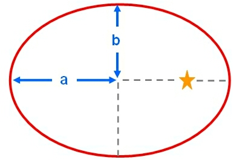
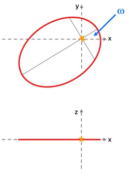

The orientation of an elliptical orbit can be specified by three orbital elements: the inclination, the ascending node and the argument of perihelion. Suppose we have an elliptical orbit with eccentricity, e and semi-major axis, a. The perihelion is the point of closest approach between the orbiting body (e.g. a planet) and the focus (e.g. the Sun lies at one focus of a planetary orbit, the other focus is empty).
If we rotate the axis of the orbit around the focus, then the rotation angle is the argument of perihelion (ω). This is demonstrated in the diagram below.
|
 |
 |
| left: An elliptical orbit with semi-major axis (a) and semi-minor axis (b). right top: A view of the orbit looking down the z-axis. The orbit has been rotated by an angle ω (the argument of perihelion) about the z-axis. right bottom: The same orbit viewed along the y-axis. The rotation by an angle ω has kept the orbit in the x-y plane. | |
The argument of perihelion is also defined as the angle between the ascending node (Ω) and the perihelion of the orbit. A related quantity is the longitude of perihelion, ϖ, although the distinction between these two quantities is often blurred. The longitude of perihelion is defined as:
ϖ = ω + Ω
For elliptical orbits around other celestial bodies, the argument of perihelion would be replaced by the argument of periastron (orbits around stars), argument of perigee (orbits around the Earth) or argument of periapsis (orbit around anything else!).